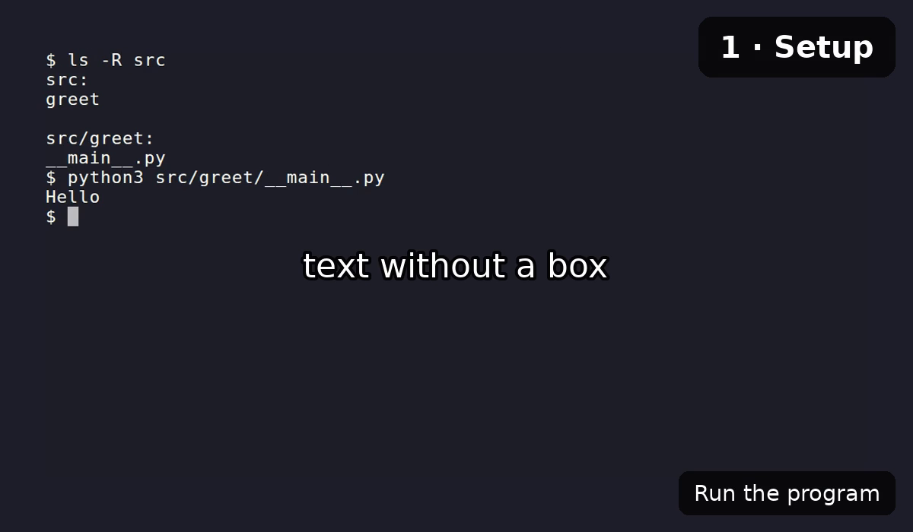

Spec reference¶
A narratty video is described by a .narratty.yaml file. narratty init writes a
commented starter, narratty validate checks one, and narratty schema prints the JSON
Schema.
Editor support¶
The first line narratty init writes tells your editor where the schema is:
# yaml-language-server: $schema=https://raw.githubusercontent.com/ditschi/narratty/v0.2.0/schema/v1.json
Editors that use yaml-language-server
read that comment and then offer completion, hover docs and inline errors for the
spec: VS Code with the Red Hat YAML extension, Neovim or Helix with yaml-language-server,
and JetBrains IDEs. The schema is committed to the repository as schema/v1.json,
so each release tag serves the schema of that release. init points the line at the
tag of the narratty version you have installed; development builds point at main.
Offline, or to pin a local copy, write the schema to a file and reference it relatively:
Unknown keys are errors, and validate reports every problem with its line and column,
plus a "did you mean" for typos:
$ narratty validate demo.narratty.yaml
demo.narratty.yaml:4:9: scenes[0].actions[0]: unknown action 'type_comand' (did you mean 'type_command'?)
Valid lines that can be left out or written shorter are reported as hints; they do not fail validation:
$ narratty validate demo.narratty.yaml
hint: demo.narratty.yaml:3:3: tts.voice: same as the default; leave it out
hint: demo.narratty.yaml:12:9: scenes[0].actions[2]: 'hold: auto' has no effect at the end of a scene; leave it out
ok demo.narratty.yaml: 2 scenes, 2 narrated, voice kokoro/af_heart
Durations¶
Every *_ms key and hold take milliseconds (1500) or a duration with a unit:
800ms, 1.5s, 2m.
Top level¶
| Key | Default | Meaning |
|---|---|---|
version |
1 |
Spec format version |
meta.title |
Untitled |
Title of the video |
tts |
Voice settings, see below | |
timing |
Sync settings, see below | |
terminal |
Look of the recorded terminal | |
requires.tools |
[] |
Extra commands the demo needs (checked by doctor) |
workspace |
What directory the demo runs in | |
sandbox |
Permissions of the container | |
environment |
Run the demo shell in a project image, Compose service or container | |
end_card |
on | Closing card, see below |
subtitles |
none |
none, files, track or burn; see Subtitles |
overlay_styles |
{} |
Named overlay styles; see Overlays |
scenes |
required | At least one scene |
tts¶
| Key | Default | Meaning |
|---|---|---|
provider |
kokoro |
kokoro or piper |
voice |
af_heart (en_US-lessac-medium with piper) |
Voice id; see Voices |
piper.length_scale |
1.0 |
Larger is slower speech |
piper.sentence_silence |
0.2 |
Seconds of silence between sentences |
kokoro.speed |
1.0 |
Speech speed |
kokoro.lang |
voice's language | Language code, e.g. en-gb |
lexicon |
{} |
How to say terms, e.g. {k8s: kubernetes}; see Pronunciation |
timing¶
| Key | Default | Meaning |
|---|---|---|
narration_buffer_ms |
500 |
Pause after each narration before the next scene |
lead_in_ms |
300 |
Silence before the first scene |
tail_ms |
1000 |
Time the last frame stays on screen |
run_hold_ms |
500 |
Pause after each run action |
pause_ms |
100 |
Pause after each key and ctrl_sequence |
terminal¶
| Key | Default | Meaning |
|---|---|---|
width, height |
1200, 700 |
Video size in pixels |
theme |
Dracula |
Any VHS theme |
font_size |
22 |
Font size |
typing_speed_ms |
40 |
Time per typed key |
shell |
bash |
bash, zsh, fish or sh |
prompt |
"$ " |
Prompt shown in the recording |
layout |
plain |
plain or editor: an explorer with preview above the shell, see Editor layout |
workspace¶
| Key | Default | Meaning |
|---|---|---|
source |
. |
Directory the demo runs in, relative to the spec |
mode |
snapshot |
snapshot (throwaway copy), rw (the real directory) or ro (read-only) |
include_uncommitted |
true |
Copy uncommitted files into the snapshot |
caches |
{} |
Named cache volumes, name: /path/in/container |
artifacts |
[] |
Paths copied out of the workspace after the run |
sandbox¶
Only used when the demo runs in a container. Anything beyond the defaults is shown to you for approval before the first run.
| Key | Default | Meaning |
|---|---|---|
network |
none |
none, allowlist or full |
allow_hosts |
[] |
host:port entries, required with allowlist |
env_passthrough |
[] |
Host environment variables passed in |
env |
{} |
Fixed environment variables |
extra_mounts |
[] |
{host, container, mode: ro\|rw} |
ssh_agent |
false |
Forward the host SSH agent |
docker |
false |
Give the demo your Docker or Podman engine; full host access |
environment¶
Runs the demo shell in your project's image, Compose service or container; see Project environments.
| Key | Default | Meaning |
|---|---|---|
image |
Image to run the shell in | |
compose |
{file, service}: run in a Compose service (file: one file or a list, default compose.yaml) |
|
container |
Run in this running container (needs workspace.mode: rw) |
|
workdir |
/work |
Where the workspace is mounted and the shell starts; for compose and container the container's working directory |
user |
host |
host (your user id), image (the image's user), a user name or UID[:GID] |
env |
{} |
Variables set in the environment's container |
read_only |
false |
Mount the image's root filesystem read-only |
packages |
[] |
Packages added with the image's package manager |
package_manager |
auto |
auto, apt, apk, dnf, microdnf, yum or zypper |
setup |
[] |
Commands run as root when the image is built |
toolkit |
prefer |
Mount the demo toolkit first (prefer) or last (fallback) on PATH, or not (off) |
Set exactly one of image, compose and container.
end_card¶
The video ends with a short card that says "Created with narratty", with a link to this documentation and a QR code of the link. The QR code sits beside the text, or above it on a narrow terminal; it is left out when the terminal is too small for it. The card is drawn in black and white so it scans on any theme.
| Key | Default | Meaning |
|---|---|---|
enabled |
unset | true or false; unset follows your config (on by default) |
duration_ms |
4000 |
How long the card stays on screen (at least 1000) |
qr |
true |
Show the QR code |
end_card: false is short for end_card: {enabled: false}. To turn the card off for
every video, put this in ~/.config/narratty/config.toml:
--end-card / --no-end-card on the command line win over the spec, and the spec
wins over the config.
Scenes¶
| Key | Default | Meaning |
|---|---|---|
id |
required | Lowercase letters, digits, - and _; unique |
narration |
none | Text spoken while the scene plays |
actions |
[] |
What happens in the terminal |
hidden |
false |
Run without recording (setup); cannot have narration |
typing_speed_ms |
terminal's | Per-scene typing speed |
pause_ms |
timing.pause_ms |
Per-scene pause after each key and ctrl_sequence |
narration_start |
with_actions |
Or after_actions |
timelapse |
none | Show the scene this many times faster (greater than 1) |
expect_exit |
success |
Exit codes of the scene's commands: success, failure or any; see Exit codes |
fast |
--fast |
true/false: fill long pauses with still frames or not; see Fast pauses |
A scene lasts as long as its actions or its narration plus narration_buffer_ms,
whichever is longer.
Timelapse¶
A long step (a download, a build) can be shown sped up instead of hidden:
- id: install
narration: Installing the dependencies takes a while; here it is eight times faster.
actions:
- run: npm ci
- id: install-runs
timelapse: 8
actions:
- wait: {screen: "added \\d+ packages", timeout_ms: 600000}
- The whole scene is sped up, typing included, so type the command in the scene before and only wait in the timelapse scene.
- Narration plays at normal speed. If it is longer than the sped-up footage, the
last frame stays until it ends. With
narration_start: after_actionsit starts when the footage ends. - A timelapse scene cannot be hidden or use
hold: auto. narratty plancannot know how long the waits take, so its length for the scene counts only the fixed actions.- The video is re-encoded once (H.264) to speed up the scenes.
narratty tapeshows where the scenes are, but plainvhsdoes not speed them up.
Actions¶
| Action | Example | Does |
|---|---|---|
run |
- run: ls -la |
Types the command, presses Enter, pauses timing.run_hold_ms; may set its own expect_exit |
type_command |
- type_command: "ls -la" |
Types the text, without Enter |
ctrl_sequence |
- ctrl_sequence: C-c |
Presses Ctrl plus a key |
key |
- key: Enter or - key: Down 3 |
Presses a key, optionally repeated |
hold |
- hold: 1.5s or - hold: auto |
Waits; auto waits until the narration is done |
wait |
- wait: "Done" or - wait: {screen: "Done", timeout_ms: 1m} |
Waits until the screen matches a regex (default timeout 15 s) |
wait |
- wait: {prompt: true, timeout_ms: 10m} |
Waits until the command has finished and the prompt is back |
diff |
- diff or - diff: [src, README.md] |
Shows what changed since the recording started, optionally only for some paths |
focus |
- focus: explorer |
Moves the keyboard to explorer or terminal (editor layout) |
reveal |
- reveal: src/app.py |
Selects a path, relative to the workspace, in the explorer (editor layout) |
overlay |
- overlay: "Open src/main.py" |
Shows text over the video; see Overlays |
browser |
- browser: docs/site/index.html |
Shows a web page over the terminal; see Browser views |
Keys: Enter, Tab, Space, Backspace, Delete, Escape, Up, Down, Left,
Right, Home, End, PageUp, PageDown, Insert. Names are case-insensitive.
Older specs write Enter as - enter; it still works, key: Enter is the current form.
Every list item starts with -. A scene always waits for its narration after its
last action, so hold: auto is only needed in the middle of a scene; a scene has at
most one. See Writing specs for when to use which action.
diff, focus and reveal take no time in the video: they run while recording is
hidden, and the screen changes at once. Add a hold after them for a pause.
diff compares against a copy of the workspace taken when the recording starts,
kept outside the workspace (its own .git is not touched). It honours .gitignore
and leaves out __pycache__. The output is coloured with delta, else bat, else
git. In the plain layout the screen is cleared and the diff is printed; in the editor
layout it opens in a popup that stays until the next key press of the scene or its end.
Exit codes¶
narratty logs the exit code of every command line run at the shell prompt and checks
it against expect_exit after recording:
| Value | Build fails when |
|---|---|
success (default) |
a command exits non-zero |
failure |
no command exits non-zero, e.g. an error demo that suddenly works |
any |
never; exit codes are not checked |
- id: typo
narration: A typo gives a helpful error.
expect_exit: failure
actions:
- run: git stauts
- id: retry
actions:
- run: make test
- run: curl https://example.org
expect_exit: any # this command only
The most specific setting wins: a run action's expect_exit, then the scene's, then
the command line (--ignore-exit makes any the default), then success.
The build exits with code 7 and names each offending command; the video is still
written so you can inspect it. A line's exit code is that of its last command
(a; b reports b). Commands stopped with C-c or C-z do not count as failures.
Commands inside programs (a REPL, an editor, a nested shell) are not checked, nor is
anything with shell: sh. In the editor layout, the terminal pane's commands are
checked. In a project environment the log is read from its container
after recording. With bash 3.2 (macOS's default) narratty turns on shell history to read the
command lines, so key: Up recalls earlier commands there.
Overlays¶
An overlay shows text over the video, in a rounded, semi-transparent box: a chapter title, the file the narration talks about. It stays readable while the terminal scrolls.

overlay_styles:
file: {position: top, size: small, color: "#f1fa8c"}
scenes:
- id: setup
narration: Let's set up the project.
actions:
- overlay: {text: "1 · Setup", style: chapter}
- run: make setup
- overlay: Run the tests next
- overlay: {text: src/greet/__main__.py, style: file, duration_ms: 3000}
The overlay appears where its action stands in the scene. It stays until the first
of: duration_ms has passed, another overlay takes its position, or the scene ends.
With keep: true it stays past the scene until another overlay takes its position
(the chapter style keeps). The box is sized around the text; \n starts a new
line. The top right is usually free of terminal text; the bottom is shared with
burned-in subtitles.
overlay: "text" uses the default style. A mapping takes text, an optional
style and any style key to change just this overlay:
| Style key | default |
Meaning |
|---|---|---|
position |
bottom-right |
top-left, top, top-right, left, center, right, bottom-left, bottom, bottom-right |
size |
medium |
small, medium, large, or a factor of terminal.font_size (1.3 = medium) |
color |
#ffffff |
Text colour, #rrggbb |
background |
#000000b3 |
Box colour, #rrggbbaa (the last two digits are the opacity) |
box |
true |
false shows the text alone, with a dark outline |
bold |
false |
Bold text |
duration_ms |
unset | Hide after this long |
keep |
false |
Stay past the end of the scene |
Built-in styles: default (above) and chapter (top-right, large, bold, keep).
overlay_styles changes them or adds your own; each style starts from default, so
it only lists what differs. Overlays fade in and out. They need the mp4 to be
re-encoded, which build does when a spec has any; in the cast page
they are drawn over the player and follow its clock.
Browser views¶
A browser view shows a web page or a local HTML file as a browser renders it, for example the rendered documentation next to its Markdown source. Chromium (which VHS records with) captures the page at the video's width; the view covers the terminal under an address bar until its scene ends.
sandbox:
network: full # only for web pages; local files need no network
scenes:
- id: page
narration: This is the page you should see.
actions:
- browser: {url: "https://github.com/ditschi/narratty", scroll: 1400}
- id: docs
narration: The built documentation looks like this.
actions:
- run: mkdocs build
- wait: "Documentation built"
- browser: {url: site/index.html, scroll: auto}
| Key | Default | Meaning |
|---|---|---|
url |
required | An http(s) URL, or an HTML file in the workspace |
scroll |
none |
auto scrolls to the end of the page (at most 4 screens), a number scrolls that many pixels |
duration_ms |
unset | Hide after this long |
load_ms |
5000 |
How long the page may load before it is captured |
browser: URL is short for browser: {url: URL}. The page is captured once, after
it has loaded; scrolling pauses a moment at the top and at the bottom and takes the
rest of the time the view is shown. A later view in the same scene replaces an
earlier one, and overlays are drawn on top. Web pages need network access: in the
container that is sandbox: {network: full}. Prefer local files for pages behind a
login; narratty never signs in. The whole example is in
examples/browser.